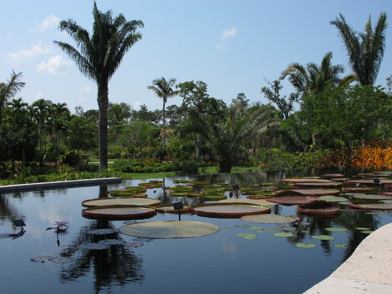
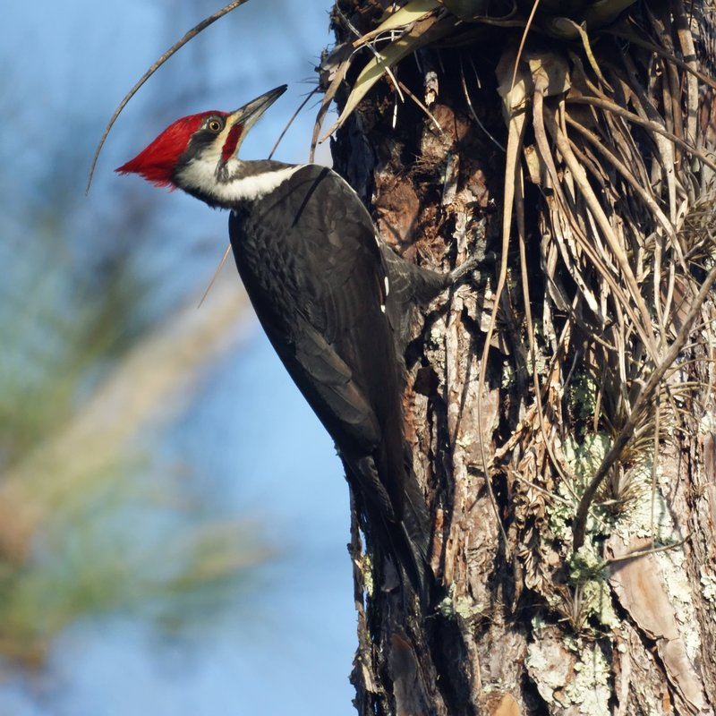

NAPLES
La Playa Beach & Golf Resort
United States
NAPLES
TRIP OVERVIEW
Day 1 – Naples Pier · Naples Botanical Garden · Naples Zoo
Day 2 – Corkscrew Swamp Sanctuary · Naples Museum of Art
Day 3 – Delnor-Wiggins Pass State Park · Rookery Bay National Estuarine Research Reserve
Day 1
🏨 From Hotel: 🚶 15 min · 🚕 5 min → Naples Pier
1. Naples Pier
↳ The defining landmark of Naples, a 1,643-foot public fishing pier extending into the Gulf of Mexico. Built in 1888, it remains a favorite gathering spot for families, anglers, and sunset watchers — pristine white sand beach on both sides, dolphins and pelicans in the water, and unobstructed ocean views.

🚕 15 min → Naples Botanical Garden
2. Naples Botanical Garden
↳ A 170-acre garden showcasing plant collections from around the world — Brazilian gardens with tropical foliage, Mediterranean sections with olive trees and lavender, and an Asian garden with water features. A peaceful retreat where you can spend hours wandering themed landscapes.

🚕 18 min → Naples Zoo
3. Naples Zoo at Caribbean Gardens
↳ A 170-acre zoo built within a former botanical garden, with over 1,300 exotic animals from around the world. Natural habitat exhibits, primate islands, and a free-flight aviary create immersive experiences. The alligator feeding shows and kayak tours through animal habitats are crowd favorites.

🚕 20 min → hotel
Day 2
🏨 From Hotel: 🚕 22 min → Corkscrew Swamp Sanctuary
1. Corkscrew Swamp Sanctuary
↳ A 2.25-mile boardwalk through pristine cypress swamp and hardwood forest managed by the Audubon Society. One of the largest old-growth cypress forests in the United States, home to alligators, birds (including bald eagles), and wildlife visible from the elevated wooden walkway without disturbing the ecosystem.

🚕 25 min → Naples Museum of Art
2. Naples Museum of Art
↳ A modern museum in downtown Naples with rotating exhibitions of contemporary and classical art from around the world. The building itself is architecturally striking, and the collection spans sculpture, painting, and photography in gallery spaces overlooking a serene courtyard.
🏛️ Tuesday - Sunday 10:00am - 4:00pm
🚫 Closed Monday
⏰ ~1 hr 30 min

🚕 18 min → hotel
Day 3
🏨 From Hotel: 🚕 12 min → Delnor-Wiggins Pass State Park
1. Delnor-Wiggins Pass State Park
↳ A 166-acre beachfront park with pristine white sand and clear Gulf waters. Mangrove forests, unspoiled dunes, and excellent shell collecting. Quieter than Naples Pier, it is ideal for swimming, picnicking, and exploring natural coastal habitat.

🚕 28 min → Rookery Bay
2. Rookery Bay National Estuarine Research Reserve
↳ A 110,000-acre marine sanctuary protecting mangrove shorelines and shallow estuary. The visitor center offers kayak rentals and guided tours into the mangrove maze where you encounter dolphins, manatees, dolphins, and hundreds of bird species. A pristine window into Florida's fragile coastal ecosystem.

🚕 25 min → hotel
Museums & Galleries · Naples Museum of Art closed Monday
Viator & GetYourGuide
↳ A two-hour evening sail along the Naples coast with snacks and drinks included. Watch dolphins play in the wake and the sun set over the Gulf.
🕐 3:00pm · ⏳ 2 hr · 👥 small group
↳ Paddle through Rookery Bay mangroves with a naturalist guide spotting wildlife, birds, and manatees in their habitat.
☕ Third Wave Coffee — Fifth Avenue S | quality espresso in a historic downtown setting
☕ Osteria Tulia — Third Street S | Italian café with excellent cortado
☕ The Local Bean — Tamiami Trail | Naples-roasted single-origin beans
Gulf Shore Boulevard Cluster · Walking Distance from La Playa
🍽️ USS Nemo — Gulf Shore Blvd | Fresh fish, clam specials, 4.5★
🍽️ The Bay House — Gulf Shore Blvd | Gulf-front casual dining, seafood-focused
🍽️ Ocean Prime — Gulf Shore Blvd | Fine dining steaks and seafood, 4.6★
Third Street South & Fifth Avenue — Downtown Naples dining core
🍽️ Osteria Tulia — Italian, seasonal pasta, house-made pastries, 4.6★
🍽️ The Bay House — Gulf-front seafood, sunset views
🍽️ The Inn on Fifth — Contemporary American, craft cocktails, rooftop bar
🍽️ Campiello — Italian, open courtyard, 4.5★
🦪 Grouper Sandwiches — iconic Florida Gulf fish, fried or blackened
🦞 Stone Crab Claws — seasonal (October–May), a Florida delicacy, served with mustard sauce
🍤 Pink Shrimp — wild Florida shrimp, sweet and tender, served grilled or boiled
🥥 Key Lime Pie — sharp citrus dessert, sweetened condensed milk classic
🌮 Cuban Sandwiches — ham, pork, cheese, pickles, pressed and griddled
🍔 DoorDash — Excellent coverage in Naples; lunch, dinner, and convenience
🍔 Uber Eats — Popular in downtown and beachfront areas
🍔 Grubhub — Good restaurant selection, especially for larger chains
🎭 Naples Philharmonic Orchestra — Naples Philharmonic Center | Classical and pops concerts
🎭 The Norris Center — Downtown Naples | Broadway-style theater and concerts
🎭 Naples Community Theater — Community productions and touring shows
🚗 Rental Car — Strongly recommended. Naples is car-dependent; distances between attractions exceed walking range.
🚕 Uber / Lyft — Available in Naples; reliable for return trips after dinner or drinks
🚌 LeeTran Bus System — Public transit exists but coverage is limited; fine for downtown-to-beach runs
🚴 Biking — Flat terrain; bike paths exist but are fragmented